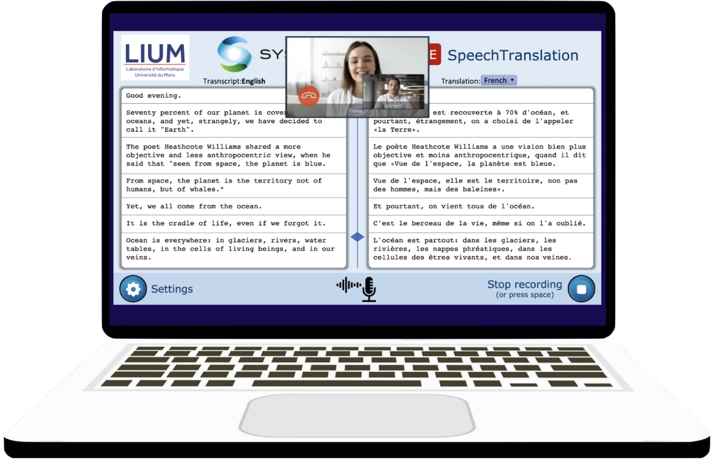
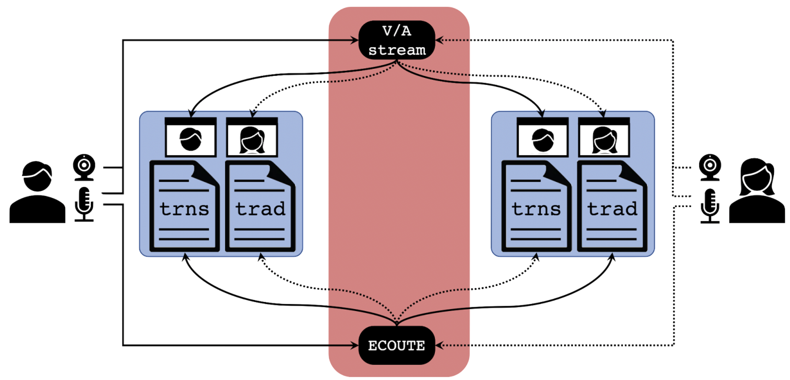
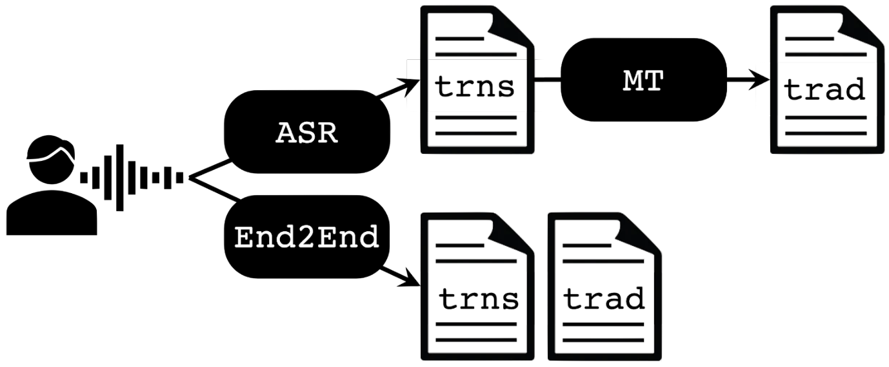

|

|
Plateforme d’Assistance à la Communication Multilingue en ligne.
Le projet vise à intégrer la production de reconnaissance et traduction vocale dans un outil de communication en ligne, ce qui permet de créer une véritable plateforme de communication sans barrières.
Les transcriptions et traductions sont affichées en temps réel au fur et à mesure qu'elles sont décodées par la reconnaissance vocale. L'application affiche également la vidéo des participants à la communication.
|
|

|
➠ Les clients tournent sur un navigateur web et transmettent des enregistrements audio au serveur à intervalles réguliers.
➠ Le serveur attend les requêtes des clients (audio) et répond avec les transcriptions et traductions des signals reçus.
• Serveur ip: port: route:
• Sauvegarder des morceaux d'audio tous les millisecondes [100-1000].
• Requête au serveur tous les millisecondes [500-5000].
|
|

|
Version pipeline (ASR + MT):
➠ Module de transcription:
• Whisper (OpenAI),
• adapté aux langues: Ar (tunisien), Fr, En.
➠ Module de traduction:
• Modèle SYSTRAN multilingue,
• adapté au style dialogue et aux paires de langues: Ar (tunisien), Fr, En ➜ Ar (MSA), Fr, En.
|